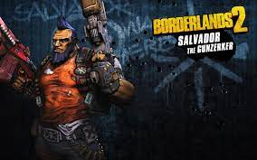
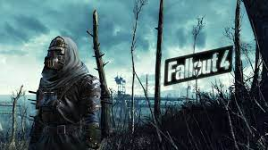
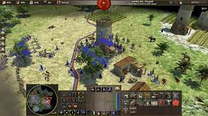

Here is one of my favorite genres, Looter Shooters!
 Borderland Wallpaper, by vetal40rus, 2015, Source.I love this looter shooter and have played it for a long time! Looter shooters refree to one of the mechanics of progressing in the game and rerolling for loot by its fps style and mob drops!
Looter Shooter games are the future, by AquaFPS, 2023, Source.Here is one of my favorite genres, Open World RPG's!
 Fallout 4 background, by rossiart, 2015, Source.Open World RPG's have the longest storylines with usually hidden or many side quests and storylines. This gives the creators more storywriting ability or worldbuilding!!
Sanbox vs. Open-World Games, by Gameranx, 2019, Source.Here is one of my favorite genres, RTS or Real Time Strategy!
 Real Time Strategy, by Wikimedia, 2014, Source.I love RTS games because they allow more control and strategy into how you choose to interact with the game! I also feel way smarter when I win
Types of Strategy Games | Video Essay, by CouchMoba, 2022, Source.